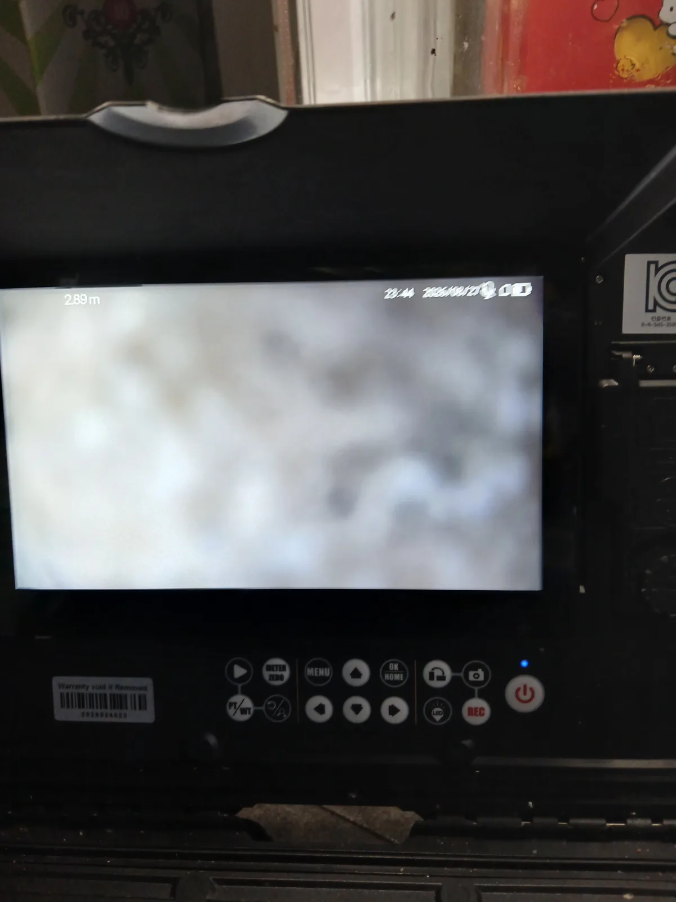

용산구 이태원동 하수구막힘, 현장 도착 후 진단
서울 용산구 이태원동의 한 식당에서 주방 하수구의 물이 제대로 빠지지 않는다는 요청을 받고 전문 장비를 준비해 신속하게 현장으로 이동했습니다. 식당 주방은 설거지와 조리가 계속 이어지기 때문에 하수구막힘이 발생하면 영업에 직접적인 지장을 줄 수 있습니다.
현장에서 주방 배수 상태와 하부 배관 구조를 먼저 확인한 뒤 배관 내시경을 투입했습니다. 내시경 화면에는 배관 내부를 선명하게 구분하기 어려울 정도로 기름때와 오염물이 가득 차 있었습니다. 단순한 음식물 한 조각이 걸린 막힘이 아니라 오랜 시간 축적된 유지방이 배관의 유효 단면을 좁힌 상태였습니다.
신라건축설비는 식당 하수구막힘을 무조건 관통하는 방식으로 처리하지 않습니다. 배관 내시경으로 내부 상태와 막힘 구간을 확인하고 기름 슬러지의 양과 배관 구조에 맞춰 적합한 세척 장비를 선택합니다.
1단계: 증상 확인과 필요한 장비 작업
배관 내시경을 천천히 진입시키며 기름때가 쌓인 범위와 배수 통로의 상태를 점검했습니다. 확인 결과 주방에서 흘러든 기름 성분이 배관 내벽을 따라 두껍게 굳어 있었고, 그 위로 음식물 찌꺼기와 오염물이 달라붙어 물이 지나갈 공간이 크게 줄어든 상태였습니다.
식당 주방 배관은 가정용 싱크대보다 기름과 음식물의 유입량이 많습니다. 따라서 배관 가운데에 작은 구멍만 내는 단순 관통 작업으로는 일시적으로 물이 내려가더라도 기름층이 남아 짧은 기간 안에 다시 막힐 가능성이 큽니다.
배관 상태를 확인한 작업자는 단순히 물길만 뚫는 것보다 배관 내벽에 붙은 기름 스케일까지 제거하는 샤프트 작업이 필요하다고 판단했습니다.

2단계: 원인 구간 처리와 정상 작동 확인
주방 배관 안으로 리지드 플렉스샤프트를 투입해 배관스케일링을 진행했습니다. 회전하는 샤프트 체인이 배관 내벽에 단단하게 굳어 있던 기름때와 슬러지를 잘게 분쇄할 수 있도록 막힘 구간을 반복해서 세척했습니다.
배관 구조와 장비의 진입 상태를 확인하며 무리하지 않도록 작업 강도와 진입 깊이를 조절했습니다. 굳은 유지방이 제거되면서 막혀 있던 물길이 점차 넓어졌고, 주방에서 배출한 물도 막힘 없이 시원하게 흘러가기 시작했습니다.
내시경 진단과 샤프트 작업을 함께 진행했기 때문에 보이지 않는 배관 내부의 문제를 추측에 의존하지 않고 확인된 상태에 맞춰 처리할 수 있었습니다.

작업 결과와 재발 방지 안내
배관 내벽을 막고 있던 기름때와 음식물 슬러지를 리지드 플렉스샤프트로 제거해 식당 주방 하수구의 배수 흐름을 정상적으로 확보했습니다.
식당 하수구는 사용량이 많아 기름때가 다시 축적될 가능성이 높습니다. 조리 후 남은 기름은 하수구에 직접 버리지 말고 별도로 처리해야 하며, 설거지 전 식기에 묻은 기름과 음식물을 최대한 닦아내는 것이 좋습니다. 거름망을 자주 청소하고 배수 속도가 느려지기 시작할 때 미리 배관세척을 진행하면 갑작스러운 역류와 영업 중단 위험을 줄일 수 있습니다.
신라건축설비는 용산구 이태원동을 비롯한 서울 전 지역과 경기권의 식당 하수구막힘에 신속하게 출동합니다. 배관 내시경검사, 석션, 관통, 리지드 플렉스샤프트 배관스케일링과 고압세척을 현장 상태에 맞춰 복합적으로 운용합니다. 단순한 주방 막힘부터 상가 공용배관과 메인 하수관, 오수관 및 대형 배관공사까지 진단과 작업을 자체적으로 대응합니다.
최종 조치: 배관 내시경으로 기름때가 집중된 구간을 확인한 뒤 리지드 플렉스샤프트를 투입해 배관 내벽의 굳은 유지방과 슬러지를 분쇄하고 배수 흐름을 복원했습니다.
현장 방문 전 확인하는 비용과 작업 범위
신라건축설비는 현장 증상과 배관 구조를 확인한 뒤 필요한 작업과 예상 비용을 안내합니다. 단순 관통으로 해결되는지, 배관내시경·석션·고압세척 또는 추가 장비가 필요한지는 현장 상태에 따라 달라집니다. 출장비와 야간 작업비, 추가 장비 비용이 발생할 수 있는 경우 작업 전에 먼저 설명하고 동의를 받은 범위에서 진행합니다.
업체를 선택할 때 확인할 사항
무조건적인 ‘0원’ 표현보다 실제 작업 범위, 추가 비용 조건, 사용 장비와 사후 대응 기준을 확인하는 것이 중요합니다. 해결되지 않았을 때의 비용 기준과 작업 후 동일 증상 발생 시 점검 범위를 사전에 문의해두면 불필요한 분쟁을 줄일 수 있습니다.
용산구 하수구막힘 자주 묻는 질문
여러 배수구가 동시에 역류하면 공용배관 문제인가요?
식당 주방에서 사용하는 하수구의 물이 원활하게 빠지지 않고 배수 속도가 현저하게 느려져 영업 중 불편이 커진 상태였습니다.처럼 증상이 나타나더라도 원인은 현장마다 다를 수 있습니다. 장비와 배관 구조를 확인한 뒤 필요한 작업 범위를 안내합니다.
고압세척이 항상 필요한가요?
작업 전 증상과 현장 여건을 확인해 예상 범위와 비용을 먼저 안내합니다. 변기 탈거, 장비 추가 투입 또는 공용배관 작업이 필요한 경우 고객 동의 없이 임의로 진행하지 않습니다.
작업 전 추가 비용을 확인할 수 있나요?
완료 후 정상 작동을 함께 확인하고 작업 범위에 따른 사후 안내를 드립니다. 동일 증상이 반복되면 현장 기록을 기준으로 원인을 다시 점검합니다.
하수구막힘 서울·경기 출동지역
신라건축설비는 용산구 이태원동 현장을 포함해 서울 25개 구와 경기도 31개 시·군의 배관 문제를 상담합니다. 현장 거리와 기사 배정 상황에 따라 출동 가능 여부를 먼저 안내드립니다.
서울 전 지역
강남구 · 강동구 · 강북구 · 강서구 · 관악구 · 광진구 · 구로구 · 금천구 · 노원구 · 도봉구 · 동대문구 · 동작구 · 마포구 · 서대문구 · 서초구 · 성동구 · 성북구 · 송파구 · 양천구 · 영등포구 · 용산구 · 은평구 · 종로구 · 중구 · 중랑구
경기도 주요 출동지역
수원시 · 용인시 · 고양시 · 화성시 · 성남시 · 부천시 · 남양주시 · 안산시 · 평택시 · 안양시 · 시흥시 · 파주시 · 김포시 · 의정부시 · 광주시 · 하남시 · 광명시 · 군포시 · 양주시 · 오산시 · 이천시 · 안성시 · 구리시 · 의왕시 · 포천시 · 양평군 · 여주시 · 동두천시 · 과천시 · 가평군 · 연천군